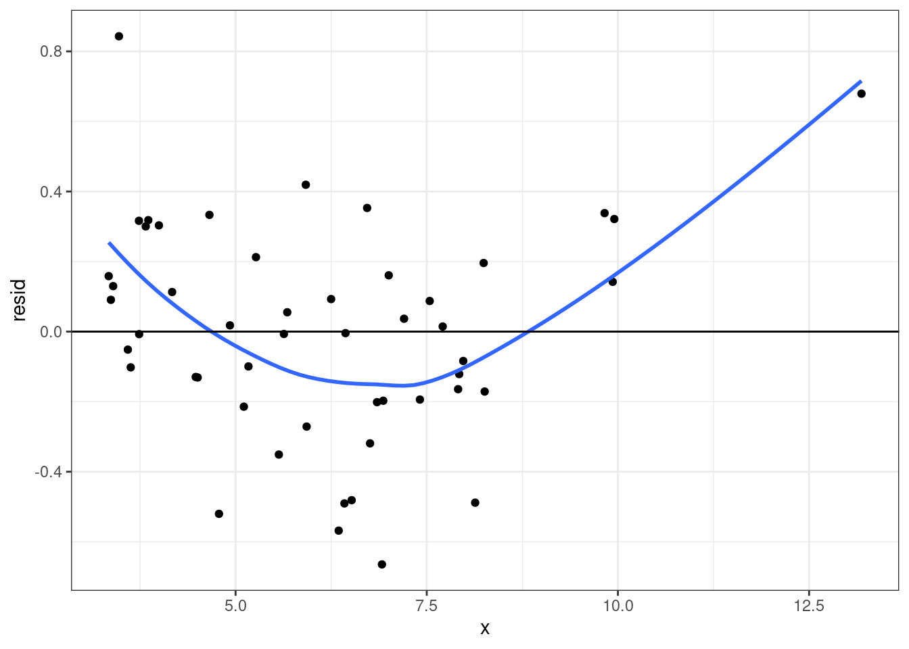
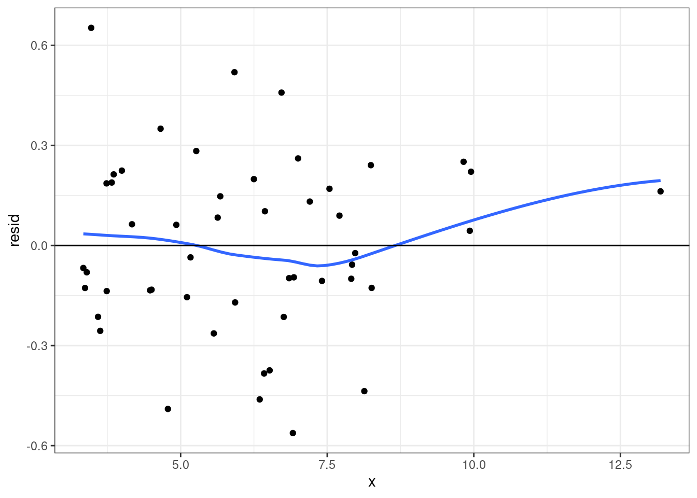
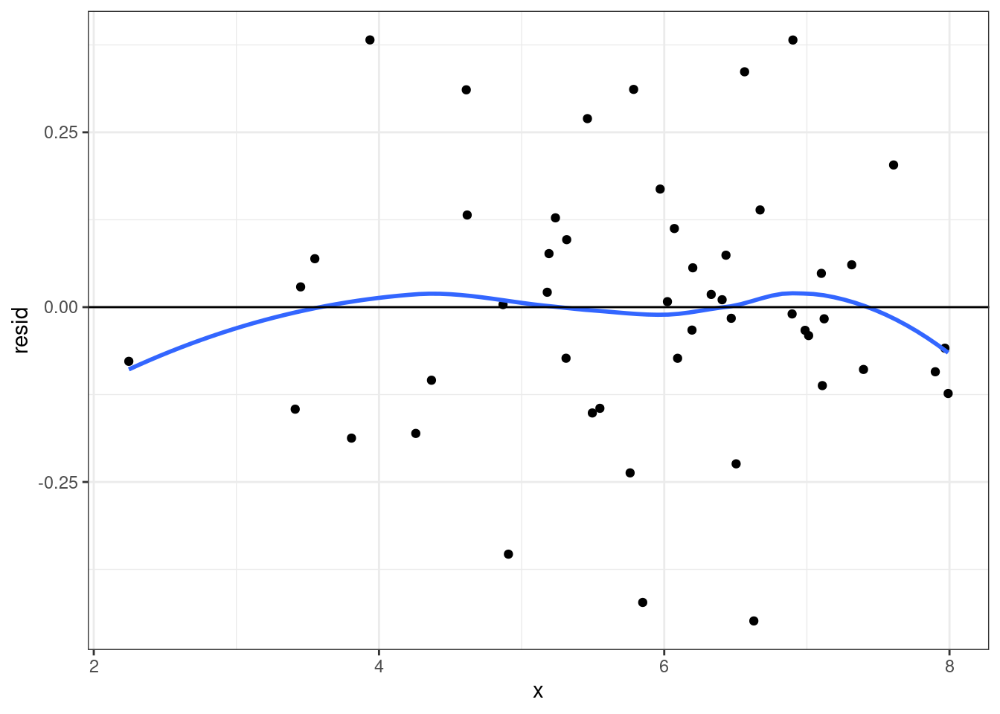
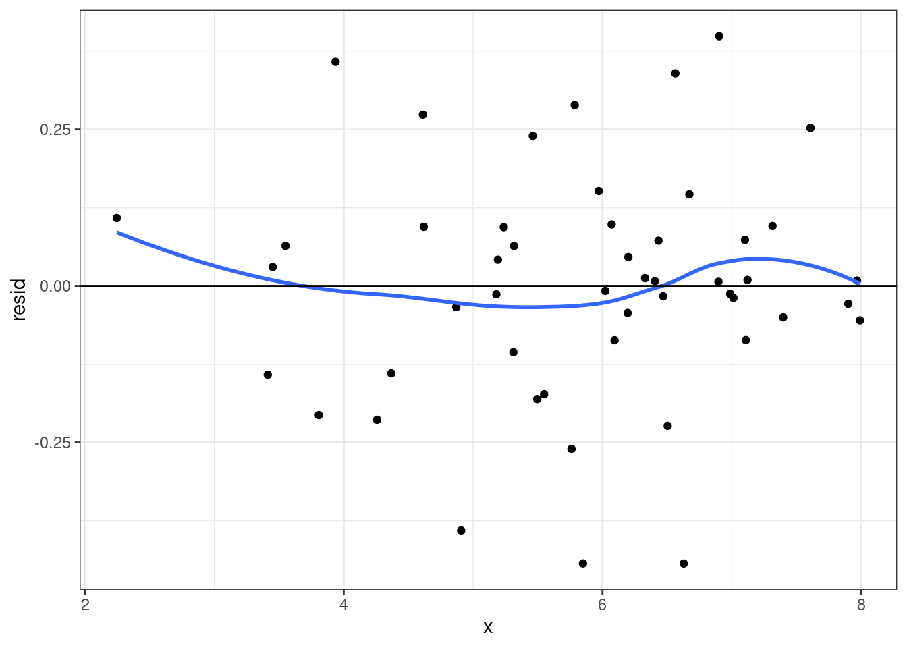
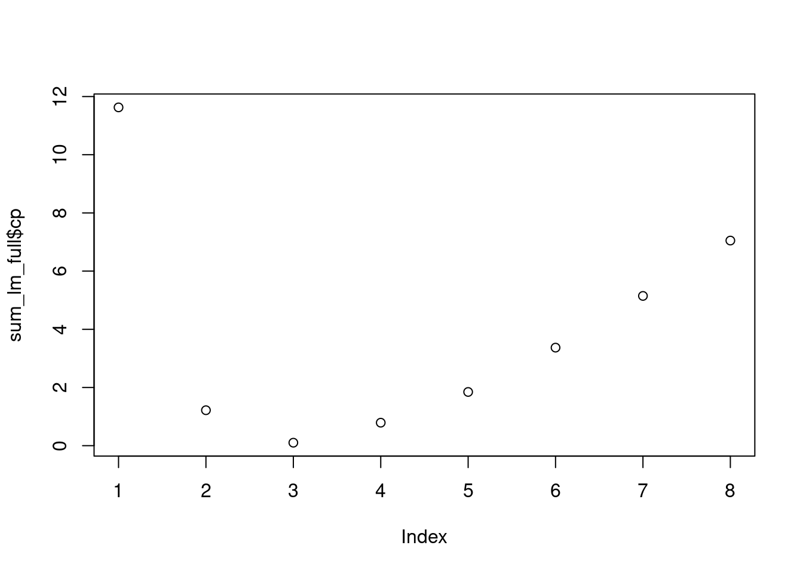
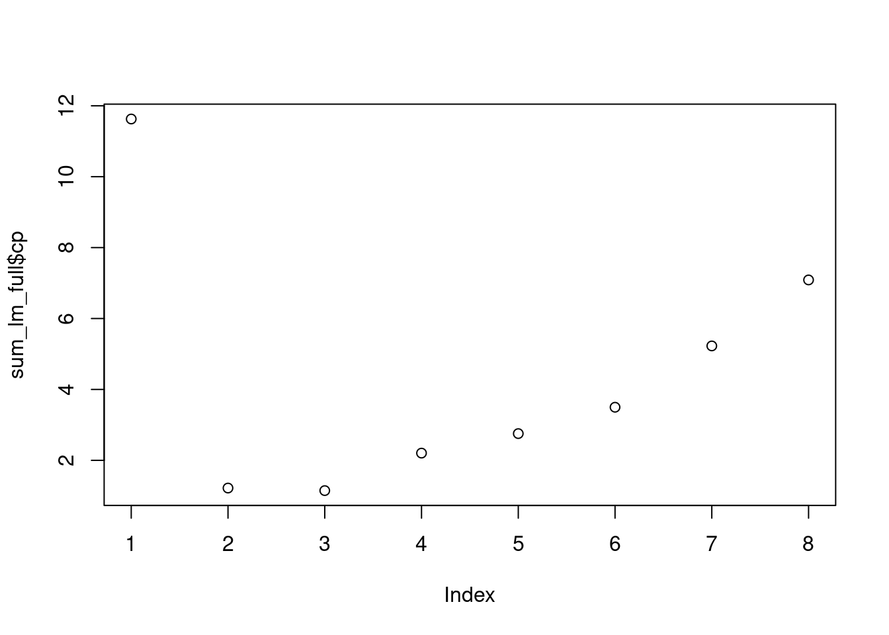
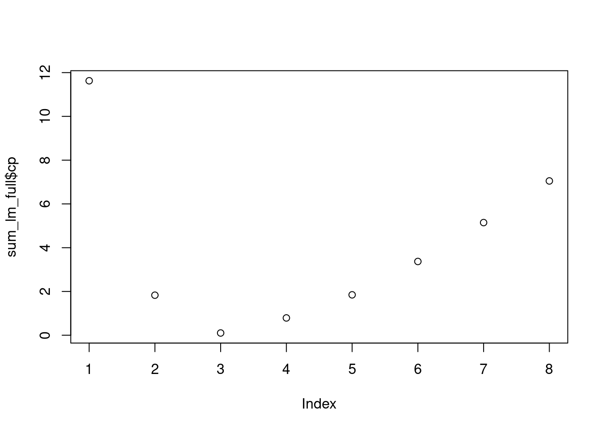

df_resid <- function(x){
res <- data.frame(obs = 1:nrow(x$model),
x$model,
resid = resid(x),
fitted = fitted(x),
sresid = rstandard(x),
hatvals = hatvalues(x),
jackknife = rstudent(x),
cooks = cooks.distance(x)
)
return(res)
}Model Building
Learning Objective
Fixing Assumptions
Model Building
Fixing Assumptions
Fixing Assumptions
Linearity
Collinearity
Unequal Variances
Influential observations and Outliers
Residual Function
Linearity \(\log(x)\)
x <- rnorm(50, 6, 2)
y <- 3 - 2 * log(x) + rnorm(50, sd = 0.25)
x_lm <- lm(y ~ x)
resid_df <- df_resid(x_lm)
ggplot(resid_df, aes(x, resid)) + geom_point() +
stat_smooth(se = F) +
geom_hline(yintercept = 0)+
theme_bw()
x_lm <- lm(y ~ log(x))
resid_df <- df_resid(x_lm)
ggplot(resid_df, aes(x, resid)) + geom_point() +
stat_smooth(se = F) +
geom_hline(yintercept = 0)+
theme_bw()
Linearity \(1/x\)
x <- rnorm(50, 6, 1.5)
y <- 3 - 2 / x + rnorm(50, sd = 0.2)
x_lm <- lm(y ~ x)
resid_df <- df_resid(x_lm)
ggplot(resid_df, aes(x, resid)) + geom_point() +
stat_smooth(se = F) +
geom_hline(yintercept = 0)+
theme_bw()
x_lm <- lm(y ~ I(1/x))
resid_df <- df_resid(x_lm)
ggplot(resid_df, aes(x, resid)) + geom_point() +
stat_smooth(se = F) +
geom_hline(yintercept = 0)+
theme_bw()
Other Common Covariate Function Transformations
\(\log_{10}(x)\)
\(x^2\)
\(\sqrt x\)
\(x^3\)
Unequal Variance
There are a couple of methods to adjust for unequal variances
Generalized Least Squares
Mixed-Effects Models
Collinearity
There are couple of methods to fix collinearity:
Principal Components Analysis
Ridge Regression
Lasso Regression
Model Building
Model Building
When given a set of predictors, we want to build a model that only contains predictors that best fits the data, without overfitting.
Ideally, we always want to choose a parsimonious model that best describes the outcome variable. The more predictors into the model, the less parsimonious and less powerful.
Choosing the best model can be done based on selection criteria such as Mallow’s \(C_p\), AIC, AICc, BIC, and adjusted \(R^2\).
Model Building
Best Subset Model
- Fit all models and select the best model based criteria
Forward Stepwise Model Building
- Begin with the null model (\(Y\sim 1\)) and add variables until a final model is chosen.
Backward Stepwise Model Building
- Begin with the full model, and remove variable until the final model is chosen.
Hybrid Stepwise Regression
- A hybrid approach between the forward and backward building approach.
Best Subset Model Building
- Begin with the null model, no predictors
- For \(k=1,\ldots, p\) (number of predictors):
Fit all \(\left(^p_k\right)\) models that contain \(k\) predictors
Define \(M_k\) as the model with the largest \(R²\)
- The final model is the model \(M_k\) based on selection criteria
Forward Stepwise Model Building
- Begin with the null model, no predictors
- For \(k=0,\ldots, p-1\) (number of predictors):
Fit all \(p-k\) models that adds one new predictor to the orginal model containing \(k\) predictors
Define \(M_{k+1}\) as the model with the largest \(R²\) among \(p-k\) models
- The final model is the model \(M_(k+1)\) based on selection criteria
Backward Stepwise Model Building
- Begin with the full model \(M_p\), with all predictors
- For \(k=p,p-1, \ldots, 1\) (number of predictors):
Fit all models that contain \(k-1\) predictors
Define \(M_{k-1}\) as the model with the largest \(R²\)
- The final model is the model \(M_k\) based on selection criteria
Penalty Term Techniques
Ridge Regression
Minimizes the following function
\[ \sum^n_{i=1}(y_i-\boldsymbol X_i^\mathrm T \boldsymbol \beta)^2 +\lambda \boldsymbol \beta ^\mathrm T\boldsymbol \beta \]
\(\boldsymbol X_i\): Design matrix for \(i\)th observation
\(\boldsymbol \beta\): regression coefficients
\(\lambda > 0\): tuning parameter
Lasso Regression
Minimize the following function:
\[ \sum^n_{i=1}(y_i-\boldsymbol X_i^\mathrm T \boldsymbol \beta)^2 +\lambda \sum^p_{j=0}|\beta_j| \]
Selecting the Ideal penalty term
Selecting the correct penalty term is essential to ensure an ideal bias-variance trade-off. The best approach is to use a cross-validation approach, more specifically, the LOOCV (leave-one-out cross-validation).
Cross-Validation
Choose a set of tuning parameters to test.
For each \(k\)th turning parameter Calculate the tuning parameter error for each value
Utilize the leave-one-out approach
For each observation fit and compute:
\[ MSE_i = (y_i - \hat y_{i(i)})^2 \]
Compute the following error:
\[ CVE_k = \frac{1}{n}\sum^n_{i=1}MSE_i \]
Identify the \(k\)th tuning parameter with the lowest \(CVE_k\)
Selection Criteria
Mallow’s \(C_p\)
\[ C_p = \frac{1}{n}(RSS + 2 d \hat \sigma^2) \]
\(RSS\): Residual Sum of Squares
\(\hat \sigma^2\): Mean Square Error
\(d\): number of predictors
Lower is better
Aikaike Information Criteria (AIC)
\[ \frac{1}{n\hat\sigma^2}(RSS+2d\hat\sigma^2) \]
- Lower is Better
Bayesian Information Criteria (BIC)
\[ \frac{1}{n\hat\sigma^2}\{RSS+\log(n)d\hat\sigma^2\} \]
- Lower is better
\(R^2\)
\[ 1-\frac{RSS}{TSS} \]
\(RSS=\sum^n_{i=1}(y_i-\hat y_i)^2\)
\(TSS=\sum^n_{i=1}(y_i-\bar y)^2\)
Higher is Better
Adjusted \(R^2\)
\[ 1-\frac{RSS/(n-d-1)}{ TSS/(n-1)} \]
- Higher is Better
Model Building R Code
R Code
library(leaps)
regsubsets(y ~ ., data)Full Subset
lm_full <- regsubsets(mpg ~ ., data = mtcars)sum_lm_full <- summary(lm_full)
print(sum_lm_full)#> Subset selection object
#> Call: regsubsets.formula(mpg ~ ., data = mtcars)
#> 10 Variables (and intercept)
#> Forced in Forced out
#> cyl FALSE FALSE
#> disp FALSE FALSE
#> hp FALSE FALSE
#> drat FALSE FALSE
#> wt FALSE FALSE
#> qsec FALSE FALSE
#> vs FALSE FALSE
#> am FALSE FALSE
#> gear FALSE FALSE
#> carb FALSE FALSE
#> 1 subsets of each size up to 8
#> Selection Algorithm: exhaustive
#> cyl disp hp drat wt qsec vs am gear carb
#> 1 ( 1 ) " " " " " " " " "*" " " " " " " " " " "
#> 2 ( 1 ) "*" " " " " " " "*" " " " " " " " " " "
#> 3 ( 1 ) " " " " " " " " "*" "*" " " "*" " " " "
#> 4 ( 1 ) " " " " "*" " " "*" "*" " " "*" " " " "
#> 5 ( 1 ) " " "*" "*" " " "*" "*" " " "*" " " " "
#> 6 ( 1 ) " " "*" "*" "*" "*" "*" " " "*" " " " "
#> 7 ( 1 ) " " "*" "*" "*" "*" "*" " " "*" "*" " "
#> 8 ( 1 ) " " "*" "*" "*" "*" "*" " " "*" "*" "*"plot(sum_lm_full$cp)
coef(lm_full,3)#> (Intercept) wt qsec am
#> 9.617781 -3.916504 1.225886 2.935837Forward Model Building
lm_full <- regsubsets(mpg ~ ., data = mtcars,
method = "forward")sum_lm_full <- summary(lm_full)
print(sum_lm_full)#> Subset selection object
#> Call: regsubsets.formula(mpg ~ ., data = mtcars, method = "forward")
#> 10 Variables (and intercept)
#> Forced in Forced out
#> cyl FALSE FALSE
#> disp FALSE FALSE
#> hp FALSE FALSE
#> drat FALSE FALSE
#> wt FALSE FALSE
#> qsec FALSE FALSE
#> vs FALSE FALSE
#> am FALSE FALSE
#> gear FALSE FALSE
#> carb FALSE FALSE
#> 1 subsets of each size up to 8
#> Selection Algorithm: forward
#> cyl disp hp drat wt qsec vs am gear carb
#> 1 ( 1 ) " " " " " " " " "*" " " " " " " " " " "
#> 2 ( 1 ) "*" " " " " " " "*" " " " " " " " " " "
#> 3 ( 1 ) "*" " " "*" " " "*" " " " " " " " " " "
#> 4 ( 1 ) "*" " " "*" " " "*" " " " " "*" " " " "
#> 5 ( 1 ) "*" " " "*" " " "*" "*" " " "*" " " " "
#> 6 ( 1 ) "*" "*" "*" " " "*" "*" " " "*" " " " "
#> 7 ( 1 ) "*" "*" "*" "*" "*" "*" " " "*" " " " "
#> 8 ( 1 ) "*" "*" "*" "*" "*" "*" " " "*" "*" " "plot(sum_lm_full$cp)
coef(lm_full,3)#> (Intercept) cyl hp wt
#> 38.7517874 -0.9416168 -0.0180381 -3.1669731Backward Model Building
lm_full <- regsubsets(mpg ~ ., data = mtcars,
method = "backward")sum_lm_full <- summary(lm_full)
print(sum_lm_full)#> Subset selection object
#> Call: regsubsets.formula(mpg ~ ., data = mtcars, method = "backward")
#> 10 Variables (and intercept)
#> Forced in Forced out
#> cyl FALSE FALSE
#> disp FALSE FALSE
#> hp FALSE FALSE
#> drat FALSE FALSE
#> wt FALSE FALSE
#> qsec FALSE FALSE
#> vs FALSE FALSE
#> am FALSE FALSE
#> gear FALSE FALSE
#> carb FALSE FALSE
#> 1 subsets of each size up to 8
#> Selection Algorithm: backward
#> cyl disp hp drat wt qsec vs am gear carb
#> 1 ( 1 ) " " " " " " " " "*" " " " " " " " " " "
#> 2 ( 1 ) " " " " " " " " "*" "*" " " " " " " " "
#> 3 ( 1 ) " " " " " " " " "*" "*" " " "*" " " " "
#> 4 ( 1 ) " " " " "*" " " "*" "*" " " "*" " " " "
#> 5 ( 1 ) " " "*" "*" " " "*" "*" " " "*" " " " "
#> 6 ( 1 ) " " "*" "*" "*" "*" "*" " " "*" " " " "
#> 7 ( 1 ) " " "*" "*" "*" "*" "*" " " "*" "*" " "
#> 8 ( 1 ) " " "*" "*" "*" "*" "*" " " "*" "*" "*"plot(sum_lm_full$cp)
coef(lm_full,3)#> (Intercept) wt qsec am
#> 9.617781 -3.916504 1.225886 2.935837Ridge and Lasso Regression
library(glmnet)
# Ridge Regression
glmnet(x, y,
alpha = 0,
lambda = grid)
# Lasso Regression
glmnet(x, y,
alpha = 1,
lambda = grid)Ridge Regression
x <- model.matrix(mpg ~ ., data = mtcars)[,-1]
y <- mtcars$mpg
grid_lambda <- seq(0, 100, by = 0.1)ridge_reg_cv <- cv.glmnet(x, y,
alpha = 0,
lambda = grid_lambda)
ridge_reg_cv#>
#> Call: cv.glmnet(x = x, y = y, lambda = grid_lambda, alpha = 0)
#>
#> Measure: Mean-Squared Error
#>
#> Lambda Index Measure SE Nonzero
#> min 1.9 982 7.108 1.892 10
#> 1se 10.9 892 8.998 2.994 10ridge_reg <- glmnet(x, y,
alpha = 0,
lambda = grid_lambda)
coef(ridge_reg)[,974]#> (Intercept) cyl disp hp drat wt
#> 21.143813495 -0.371451745 -0.005255145 -0.011639875 1.054826728 -1.238823689
#> qsec vs am gear carb
#> 0.162434931 0.767311761 1.628364774 0.544002049 -0.549534073Lasso Regression
x <- model.matrix(mpg ~ ., data = mtcars)[,-1]
y <- mtcars$mpg
grid_lambda <- seq(0, 100, by = 0.1)lasso_reg_cv <- cv.glmnet(x, y,
alpha = 1,
lambda = grid_lambda)
lasso_reg_cv#>
#> Call: cv.glmnet(x = x, y = y, lambda = grid_lambda, alpha = 1)
#>
#> Measure: Mean-Squared Error
#>
#> Lambda Index Measure SE Nonzero
#> min 0.9 992 8.322 2.079 3
#> 1se 1.6 985 10.218 2.551 3lasso_reg <- glmnet(x, y,
alpha = 1,
lambda = grid_lambda)
coef(lasso_reg)[,993]#> (Intercept) cyl disp hp drat wt
#> 36.00374206 -0.88697325 0.00000000 -0.01170578 0.00000000 -2.70662163
#> qsec vs am gear carb
#> 0.00000000 0.00000000 0.00000000 0.00000000 0.00000000